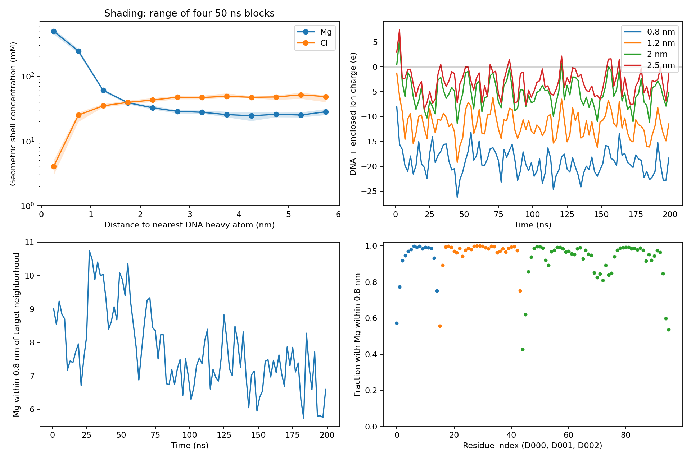

Job 2bc15e9e2531, created November 11, 2026 at 09:56 MST. 300 K; 66 hydrated Mg ions, 39 chloride ions, DNA charge −93e. Contacts and screening use all 10,000 frames at 20 ps spacing. Density profiles use 400 frames at 0.5 ns spacing.
This analysis diagnoses this trajectory. It does not measure the causal difference between box sizes or salt concentrations. All distances below are from the nearest DNA heavy-atom center, using periodic boundaries.
The smaller box contains a substantial region with approximately bulk-like radial ion concentrations. Beyond 3 nm (48.6% of cell volume), pooled concentrations are 25.94 mM Mg and 48.09 mM chloride, approaching the 1:2 ratio of neutral MgCl2. The outer region is not exactly neutral and these are concentrations, not chemical activities. The whole-cell 70.6 mM Mg concentration therefore substantially overstates the outer-solvent concentration.
At 2 nm, ionic charge compensates 94.3% of DNA charge. Quarter-mean residual charge ranges from −4.93 to −5.63e, indicating relatively stable global screening. Local occupancy is less stationary: mean Mg count within 0.8 nm of the target neighborhood decreases 8.81 → 8.04 → 7.33 → 6.97 across four 50 ns blocks. Individual continuous local association intervals reach 82.18 ns.
The target KIMMDY score–Mg-count Spearman correlation is 0.313 over the full run but only 0.094 over 50–200 ns; quarter correlations change sign. There is no consistent evidence here that local Mg count controls CPD propensity. Structural motion can itself change the measured ion neighborhood.
These observations support retaining the smaller box as a viable choice; they do not establish box-size independence. Radially averaged profiles can conceal directional periodic-image effects. The most evident remaining issue is local equilibration/sampling, which requires matched replicates or longer sampling to distinguish from a systematic box effect.

Net charge is −93 + 2N(Mg) − N(Cl). It includes DNA and mobile ionic charge, not water polarization. Hydration waters have zero net charge and are assigned with their Mg center in this count.
| Radius (nm) | Mean Mg | Mean Cl | Net charge (e) | Compensated fraction | Net charge by 50 ns quarter (e) |
|---|---|---|---|---|---|
| 0.5 | 25.359 | 0.237 | -42.519 | 0.543 | -39.199, -41.715, -46.868, -42.294 |
| 0.8 | 37.403 | 0.951 | -19.146 | 0.794 | -18.576, -18.291, -20.557, -19.158 |
| 1.0 | 40.087 | 1.657 | -14.482 | 0.844 | -14.124, -13.626, -15.460, -14.717 |
| 1.2 | 41.983 | 2.528 | -11.562 | 0.876 | -11.406, -10.866, -12.147, -11.827 |
| 1.5 | 44.297 | 4.134 | -8.539 | 0.908 | -8.511, -7.938, -8.922, -8.786 |
| 2.0 | 47.698 | 7.686 | -5.290 | 0.943 | -5.182, -4.935, -5.632, -5.409 |
| 2.5 | 50.997 | 12.140 | -3.147 | 0.966 | -2.849, -3.236, -3.367, -3.137 |
| 3.0 | 54.254 | 17.145 | -1.638 | 0.982 | -1.168, -1.681, -2.184, -1.519 |
| 4.0 | 60.199 | 27.802 | -0.404 | 0.996 | -0.289, -0.222, -0.722, -0.383 |
Geometric shell volumes are computed within the actual periodic box using 32,768 scrambled Sobol points per sampled frame. They account for overlapping shells and the irregular DNA shape. They are not ion-specific accessible volumes; near-DNA shell concentrations should not be called free-ion concentrations. A flat radial profile and approximate 2[Mg]=[Cl] are useful bulk diagnostics, not proof of an infinite reservoir.
| Minimum distance (nm) | Cell volume fraction | Mg (mM) | Cl (mM) | Mg by quarter (mM) | Cl by quarter (mM) |
|---|---|---|---|---|---|
| 1.5 | 0.805 | 28.721 | 46.262 | 28.507, 28.238, 29.388, 28.757 | 46.087, 46.000, 47.109, 45.862 |
| 2.0 | 0.712 | 27.384 | 47.162 | 27.109, 27.100, 28.034, 27.301 | 46.658, 46.838, 48.082, 47.082 |
| 2.5 | 0.603 | 26.464 | 47.950 | 25.679, 26.113, 27.352, 26.716 | 47.031, 47.008, 49.405, 48.358 |
| 3.0 | 0.486 | 25.936 | 48.095 | 24.616, 25.465, 27.534, 26.095 | 46.450, 46.657, 49.835, 49.381 |
Target neighborhood = D000 residues 7–9 and D001 residues 14–16, including the intended thymine pair. The 0.8 nm threshold denotes hydrated-Mg proximity, not a direct coordination bond. Continuous intervals have no gap allowance; contacts shorter than 20 ps are unresolved, and intervals touching trajectory boundaries are censored. They are not fitted binding lifetimes.
| Region | Mean Mg count | Unique Mg visiting | Mg always present | Longest observed interval (ns) | Censored / all intervals |
|---|---|---|---|---|---|
| DNA_8A | 37.403 | 66 | 0 | 120.600 | 85 / 8718 |
| DNA_12A | 41.983 | 66 | 0 | 123.700 | 93 / 6048 |
| DNA_20A | 47.698 | 66 | 1 | 200.000 | 104 / 5098 |
| target_neighborhood_8A | 7.788 | 62 | 0 | 82.180 | 14 / 3149 |
Target-neighborhood count by 50 ns quarter: 8.812, 8.040, 7.331, 6.967.
| Residue | Fraction with Mg within 0.8 nm | Mean Mg count | Distinct visiting Mg |
|---|---|---|---|
| D001:15 (THY) | 1.000 | 3.512 | 45 |
| D001:14 (GUA) | 1.000 | 3.219 | 44 |
| D000:7 (GUA) | 1.000 | 3.474 | 45 |
| D001:4 (THY) | 1.000 | 2.789 | 47 |
| D000:9 (THY) | 0.999 | 2.963 | 44 |
| D001:16 (GUA) | 0.999 | 3.221 | 47 |
| D001:13 (THY) | 0.998 | 2.547 | 46 |
| D001:19 (THY) | 0.998 | 2.279 | 47 |
| D001:20 (GUA) | 0.997 | 2.387 | 51 |
| D001:27 (GUA) | 0.997 | 2.558 | 49 |
| D002:7 (CYT) | 0.997 | 2.340 | 46 |
| D002:6 (ADE) | 0.997 | 2.443 | 51 |
| D001:3 (GUA) | 0.995 | 2.606 | 49 |
| D001:26 (THY) | 0.995 | 2.814 | 53 |
| D002:13 (ADE) | 0.994 | 2.601 | 46 |
Spearman correlations between target-neighborhood Mg count and geometry, sampled every 0.1 ns. These are descriptive associations; autocorrelation, drift and common causes prevent interpreting them as causal effects of Mg. No independent-frame significance tests are used.
| Observable | Full 200 ns | 50–200 ns | Four quarter correlations |
|---|---|---|---|
| helix_tilt_deg | 0.346 | 0.150 | 0.249, 0.169, -0.004, 0.216 |
| helix_centroid_sep_A | -0.333 | -0.062 | -0.244, -0.197, 0.050, -0.166 |
| d_mid_A | 0.073 | 0.141 | 0.108, -0.167, 0.075, 0.262 |
| old_reference_local_wc_fraction | -0.028 | -0.017 | -0.060, -0.085, 0.011, -0.076 |
| intended_KIMMDY_upstream_propensity | 0.313 | 0.094 | -0.046, 0.183, -0.039, -0.292 |
monotone enclosed counts; full-cell net charge zero; density shell volumes sum to instantaneous cell volume; density shell counts conserve 66 Mg and 39 Cl; independent MDAnalysis minimum-image Mg distances at 5 frames; independent scrambled Sobol volume integration with 8x points at 5 frames; far-field volume within 2%. Source trajectory size and modification timestamp were unchanged during analysis. PSF and analysis script SHA-256 are recorded in summary.json.
Run analyze.py, then verify.py, then report.py with the project Python environment. Inputs: /media/jojo/Archive/nadoc_jobs/2bc15e9e2531/package/2hb_1xT_namd_solvated/output/2hb_1xT_01_production_200ns_k0.dcd.
Data: summary.json, timeseries.npz, density.csv, residue_occupancy.csv, verification.json.